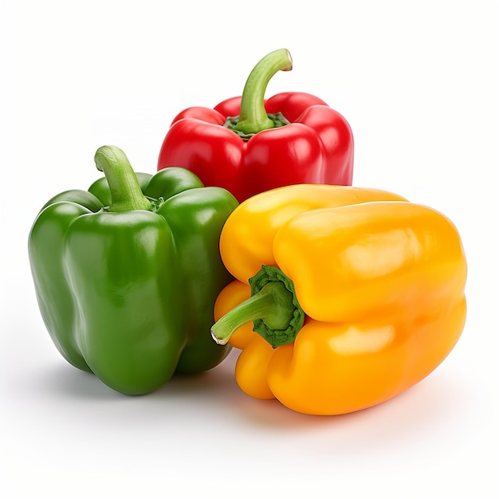
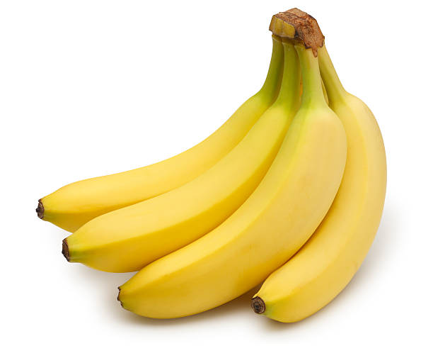
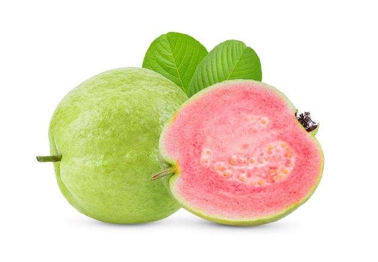
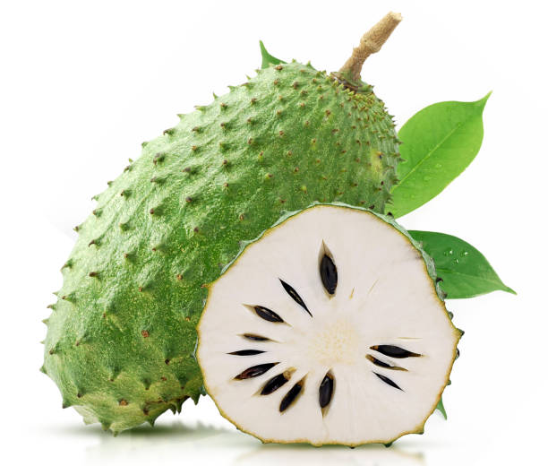
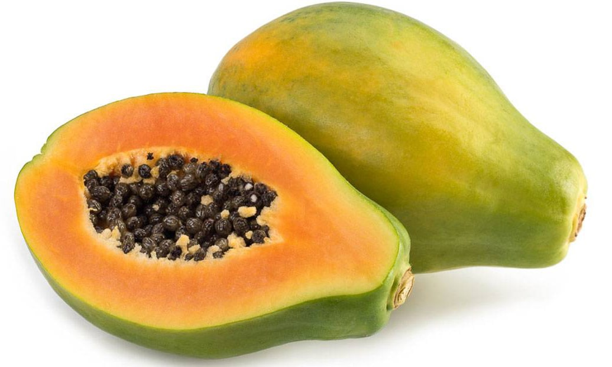
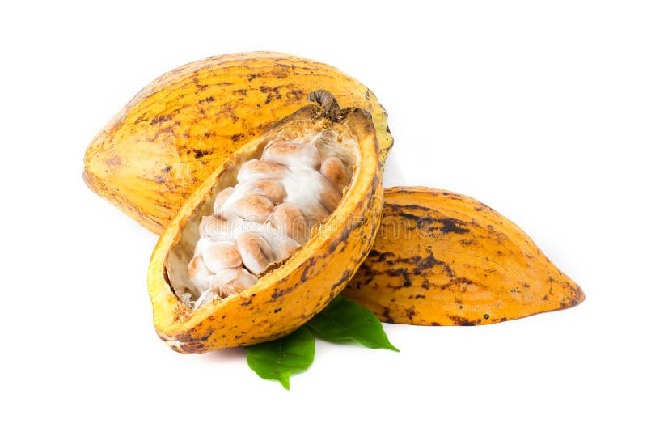

ߛߍ߬ߣߍ
Agriculture

ߥߊߟߌ߫ ߦߋ߫ ߝߏ߬ߘߏ ߟߋ߬ ߘߌ߫ ߡߍ߲ ߦߋ߫ ߛߣߍ߬ߞߍ ߣߌ߫ ߓߋߦߊ߲ߧߊߟߌ ߟߎ߬ ߓߍ߯ ߞߍ߫ ߟߊ߫ ߢߐ߲߯ߝߍ߬߸ ߢߊ߫ ߡߊ߬߸ ߡߍ߲ ߘߴߊ߬ ߞߍ߫ ߊ߬ߟߎ߬ ߘߌ߫ ߢߐ߮ ߘߝߊ߫. ߛߍ߬ߣߍ ߓߊ߯ ߞߍ߫߸ ߘߎ߭ ߣߐ߮ ߘߌ߫ ߛߣߍ߬ߝߋ߲ ߠߎ߬ ߟߊߢߊ߬߸ ߞߊ߬ ߥߟߏߒߘߐ ߟߎ߬ ߖߘߌߥߊ߫߸ ߓߋߦߊ߲ ߠߎ߬ ߘߌ߫ ߏ߬ ߟߎ߫ ߕߣߐ߬ߓߐ߫߸ ߞߵߊ߬ߟߎ߬ ߖߘߌߥߊ߫. ߏ߬ ߟߎ߬ ߝߣߊ߫ ߓߏ߭ ߣߴߊ߬ߟߎ߬ ߛߎߣߊ ߘߌ߫ ߞߍ߫ ߞߊ߬ ߘߎ߱ ߣߐ߯ߞߏ ߖߘߌߥߊ߫. ߏ߬ ߓߊ߯ ߞߍ߫߸ ߛߣߍ߬ߝߋ߲߫ ߟߊ߲߬ߣߍ ߥߟߊ ߟߊ߲߬ߕߊ ߟߎ߬ ߝߣߊ߫ ߘߌ߫ ߖߘߌߥߊ߫.
Wali est une ferme agro-pastorale, une exploitation rurale intégrée qui combine l'agriculture et l'élevage. les animaux nourrissent les sols avec le fumier, et les cultures peuvent nourrir les animaux.
ߥߊߟߌ߫ ߛߌߦߊߡߊ߲ ߏ߬ ߟߎ߬ ߞߍ߫ ߢߐ߰ߝߍ ߞߎ߲߭ ߠߋ߬߸ ߞߊ߬ ߛߐ߬ߘߐ߲߬ߘߊ ߟߊ߫ ߛߌߦߊߦߊ߫߸ ߞߵߊ߬ߟߎ߬ ߖߘߌߥߊ߫.
L'objectif est de produire plusieurs Sources de revenus tout en utilisant les ressources de manière intelligente:
ߥߊߟߌߘߊ ߟߎ߬
Les activités

ߞߵߊ߬ ߟߊߥߟߌ߬ ߡߌ߬ߙߌ߲߬ߘߌ ߡߍ߰ߦߊ߬ߓߐ߬ߞߏ ߡߊ߬߸ ߥߊߟߌ ߓߘߊ߫ ߓߋߦߊ߲߫ ߛߌߦߊߡߊ߲߫ ߓߌ߬ߟߊ߬߸ ߦߏ߫:
Pour l'approvisionnement de la population en protéines animales, Wali élève des catégories animales dont:

ߥߊߟߌ߫ ߦߋ߫ ߖߍ߫ ߟߊߡߐ ߝߣߊ߫ ߞߍ߫ ߟߊ߫߸ ߞߵߊ߬ ߟߊߥߟߌ߬ ߡߌ߬ߙߌ߲߬ߘߌ ߟߊ߫ ߡߍ߬ߦߊ߬ߡߊ߬ߝߋ߲ ߠߎ߬ ߘߐߓߊ߬ߛߊ߲߬ ߞߏ߬ߢߌߡߊ ߡߊ߬. ߓߌ߬߸ ߖߍ߮ ߛߎ߯ߦߊ߫ ߝߌ߬ߟߊ߫ ߟߋ߬ ߟߊߡߐ߭ ߦߴߌߘߐ߫ ߕߋ߲߬. ߏ߬ ߟߎ߬ ߝߟߍ߫:
Pour diversifier les protéines de source animale, Wali pratique la pisciculture dans les étangs. Deux types de poisson sont élevés actuellement dont:


 ߛߌ߬ߛߍ ߟߎ߬
ߛߌ߬ߛߍ ߟߎ߬
 ߕߐ߲ߞߣߐ ߟߎ߬
ߕߐ߲ߞߣߐ ߟߎ߬
 ߞߊ߬ߡߌ߲ ߠߎ߬
ߞߊ߬ߡߌ߲ ߠߎ߬
 ߜߋ߲ߘߋ߫ ߥߐ߬ߟߐ ߟߎ߬
ߜߋ߲ߘߋ߫ ߥߐ߬ߟߐ ߟߎ߬
 ߛߊ߲ߣߍ߲ ߠߎ߬
ߛߊ߲ߣߍ߲ ߠߎ߬
 ߓߊ߭ ߟߎ߬
ߓߊ߭ ߟߎ߬
 ߛߊ߭ ߟߎ߬
ߛߊ߭ ߟߎ߬
 ߣߌ߬ߛߌ ߟߎ߬
ߣߌ߬ߛߌ ߟߎ߬
 ߕߍߓߍ߲
ߕߍߓߍ߲
 ߡߊ߰ߣߐ
ߡߊ߰ߣߐ
ߥߊߟߌ߫ ߦߋ߫ ߛߎ߬ߡߊ߲ ߛߎ߯ ߛߌߦߊߡߊ߲߫ ߠߋ߬ ߛߣߍ߬ ߟߊ߫߸ߞߵߏ߬ ߟߎ߬ ߥߟߏߒߘߐ ߟߎ߬ ߓߌ߬ߟߊ߬߸ ߡߌ߬ߙߌ߲߬ߘߌ ߛߊ߬ߥߏ ߘߐ߬߸ ߓߊߟߞߏ ߞߊ߲ߡߊ߬. ߊ߬ߟߎ߬ ߛߙߍߘߍ ߝߟߍ߫:

ߝߙߏ߬ߕߏ
ߣߡߊ߬ߛߊ
ߓߎ߬ߦߍ߬ߞߌ
ߛߎ߲߬ߛߎ߲
ߦߙߌߖߋ
ߞߊ߬ߞߊ߬ߏWali pratique plusieurs cultures dont les produits sont mis à la disposition du peuple pour leur alimentation. Voici la liste des cultures pratiquées: